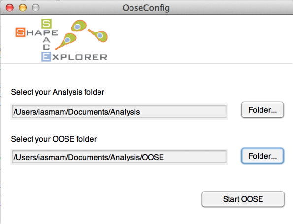
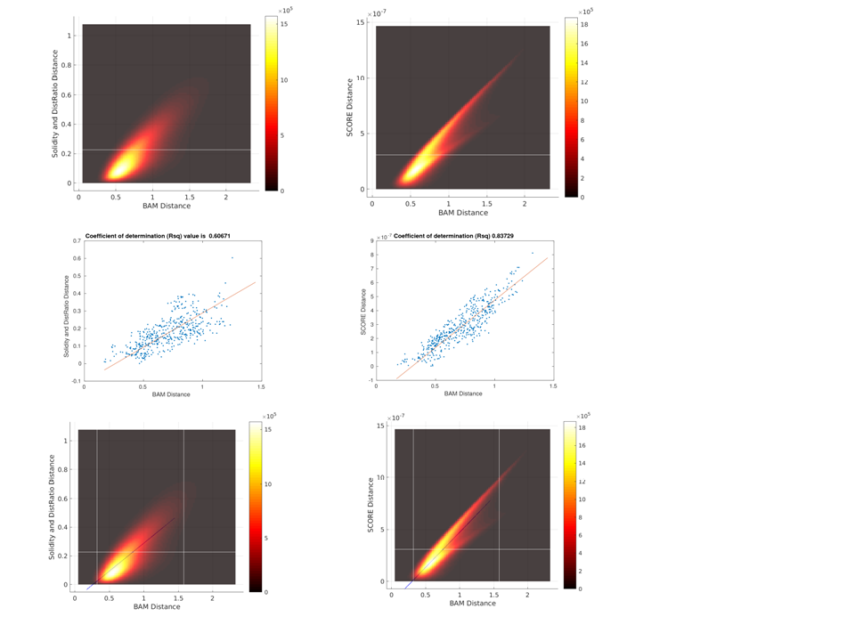
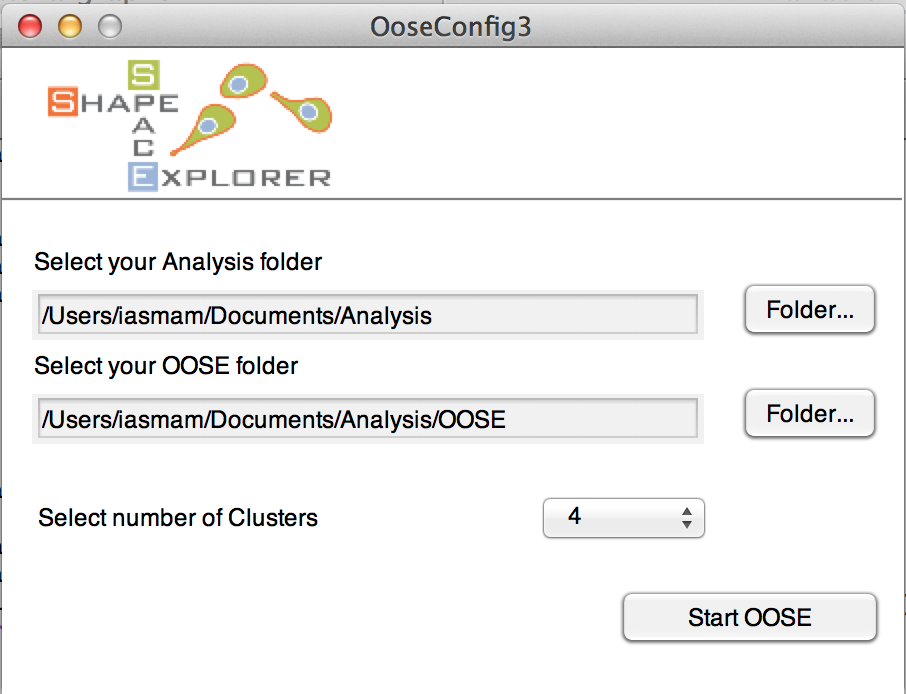
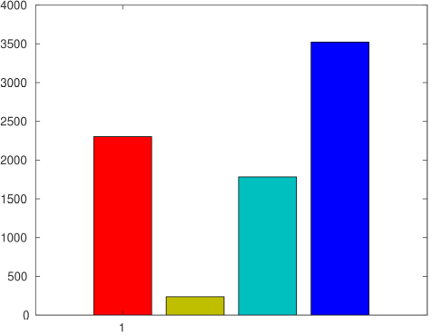
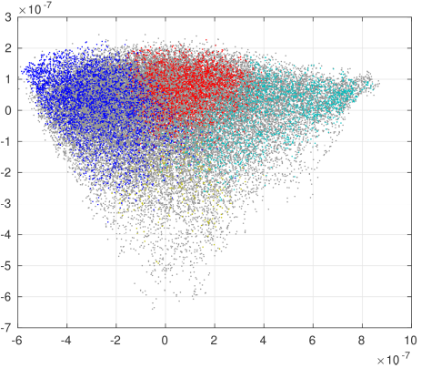
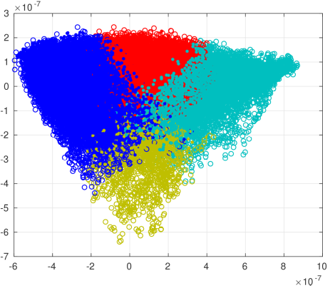

Out of Sample Extension
First step: create a folder called OOSE (possibly inside Analysis folder), then perform the following two preparatory steps:
- Run
1-ImageSegmentationFull > Run_CellSegmentation.mand select OOSE as your Analysis folder - Either correct data manually, using
Inspect Datafor allImageStacksXXX.matand run1-ImageSegmentationFull > MakeBigStructs.mor continue without inspection running1-ImageSegmentationFull > MakeBigStructsWithoutManual.m.
Now, run 6_OoSE > run_OoSE_training and configure the next step

Once completed successfully, the OOSE folder contains the new file:
- LP_trained.mat; its structure has Nx5 matrix, where N is the number of frames analysed.
Now, run 6_OoSE > generate_OoSe_distMatrix_new (Choose analysis and OoSE folders as above and click Start OOSE in similar way to the previous step). After correctly finishing, there will be one new file in the OOSE folder:
- Dist_mat.mat
- OoSE_embedding.mat
As a validation step, run 3-ShapeFeatures > Run_PlotBAMvsSCORES and select the analysis and OsSE folders, then the program will produce the following figures:

First and second rows (from left to right) show a comparison between ‘Score’ and ‘Solidity and DistRatio’ distributions, respectively, while third row shows regression lines on top of the shape distributions.
To compare the OOSE sample within the shape parameters and cluster parameters of say the control sample, run 6_OoSE > createBargraphs.m

For clusters, select the best numbers from the reference (Analysis) sample. The new subset will be plotted in shape space using the two most distinctive features for x- and y-axis from the larger sample in Analysis. Also, for the clustering, the sample in Analysis is used as ‘reference’ clusters, and this permits to see how this sample extension compares to a larger sample or a control sample.
 Bar graphs for clusters with absolute numbers
 Shape space with reference dots in grey and sample extension in colour
 Extension shapes in full circles and reference shapes in empty circles.
Note: All Figures are plotted in OOSE/Figures, with numbers of bar graphs written in CVS files.